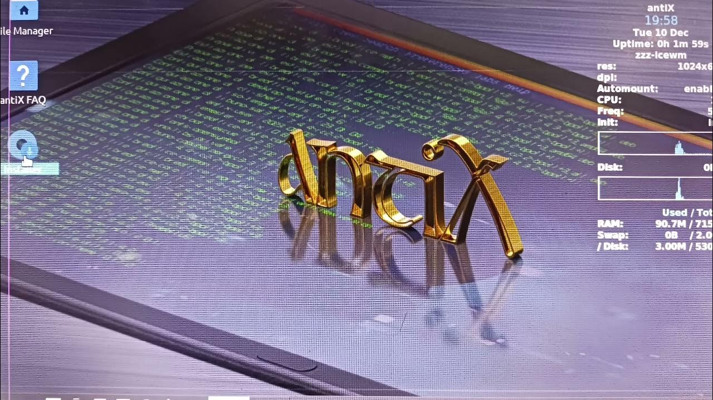

Notebook
Miniportátiles
Desde 35 €
Para equipos pequeños y con poca memoria (netbooks, notebooks antiguos).
- Instalación de Linux ligero...
- Configuración básica...
- Optimización máxima



Instalo un sistema Linux ligero para que tu equipo vuelva a ir rápido sin comprar uno nuevo. Ideal para navegar, estudiar, ver vídeos, usar documentos y correo.
Consulta gratuita: dime el modelo de tu equipo y te digo si merece la pena recuperarlo.
Trabajo con tres tipos de equipos: notebooks, portátiles y sobremesas. Los precios pueden variar un poco según el estado del equipo y si quieres añadir un SSD u otras mejoras.
Desde 35 €
Para equipos pequeños y con poca memoria (netbooks, notebooks antiguos).
Desde 40 €
La opción más habitual.A menudo los portátiles con 4GB de Ram y CPU de 2 núcleos se ahogan con windows
Desde 45 €
Perfecto para equipos de casa o trabajo que se han quedado lentos.
💡 Si veo que tu equipo no va a mejorar, te lo digo antes: nunca cobro por nada que no funcione.
Proceso sencillo y sin compromiso.
Me dices el modelo y qué problema notas. Probamos una version live de Linux desde un pendrive sin instalar nada a ver si te gusta o si hay mejora.
Instalo Linux ligero, programas esenciales y dejo todo funcionando.
Te explico lo básico si lo necesitas.
Soy Alejandro, desarrollador web y entusiasta de GNU/Linux. Me formé en Linux básico y avanzado y he trabajado con muchas distros ligeras.
Creo en reducir residuos electrónicos y en aprovechar equipos que siguen siendo útiles. Si quieres que tu portátil o PC vuelva a ser rápido, estaré encantado de ayudarte.
Escríbeme y cuéntame tu caso. Sin compromiso.
Teléfono / WhatsApp:
643 24 66 61
WhatsApp directo:

Puedes enviarme foto del portátil o PC si quieres para una revisión inicial.